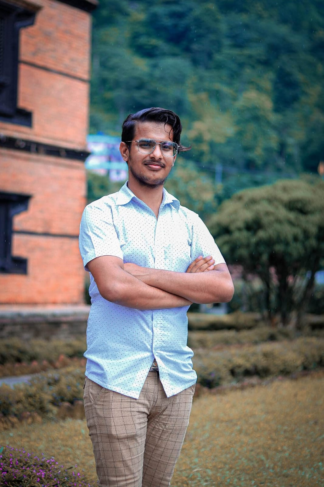
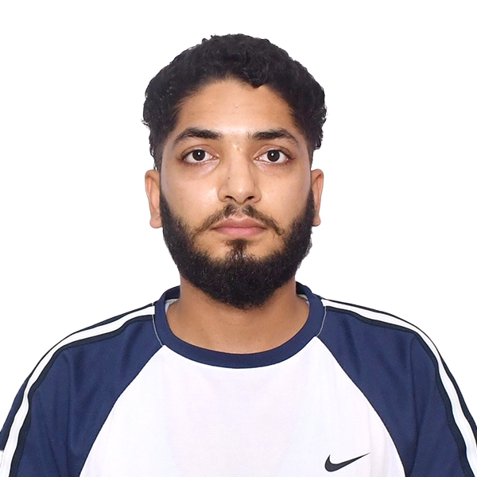
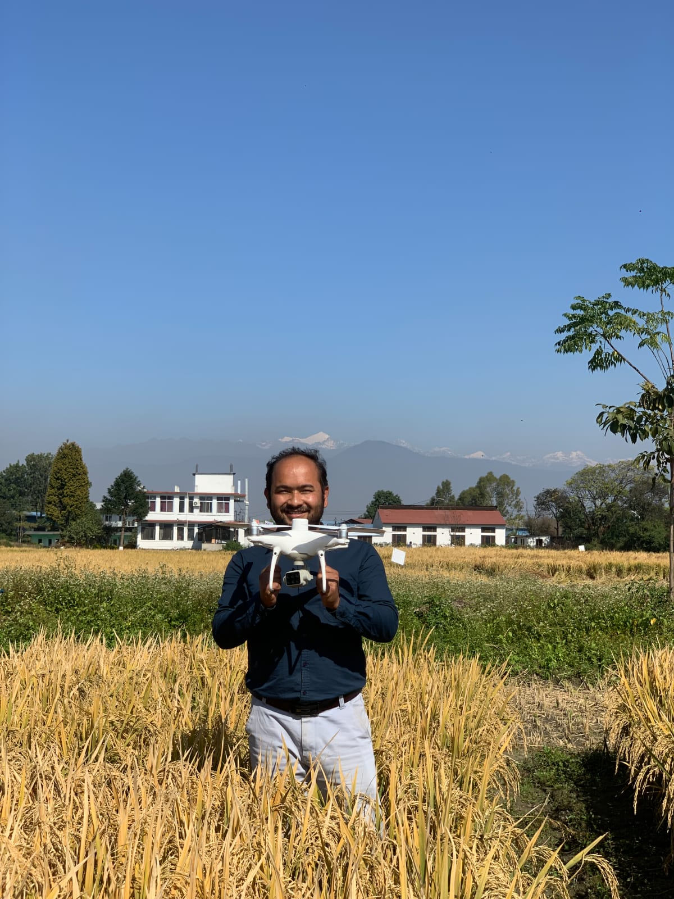

Our Team
Our dedicated team includes talented researchers and students committed to advancing soil science.

Krishna Aryal
Principal Investigator
Lead Researcher and Lab Director. Specializes in Soil Nitrogen Management, Precision Soil Fertility Monitoring, and Precision Agriculture Applications

Santosh R. Joshi
Undergraduate Student
Research focus: Sustainable Agriculture, GIS-based Soil Fertility Mapping, Nutrient Management, and Precision Farming for Resilient Farming System in Nepal

Matrika Adhikari
Undergraduate Student
Research Focus: Improving Nitrogen use Effieciency and Nitrogen Uptake in Soil along with the Carbon Sequestration and Biofertilizers (Azolla and VAM)
Prajwol Rijal
Undergraduate Student
Research Focus: Biochar and Biofertilizer (Rhizobium) GIS-Based Soil Fertility Management for Precision Soil and Sustainable Agriculture System in Nepal

Lalit BC
Research Partner
Co-founder of Map Mentors Research focus: Precision Agriculture and Crop Health Monitoring using UAVs, Machine Learning, and Computer Vision
Abhishek Chaudhary
Undergraduate Student
Research focus: Precision and Sustainable Agriculture, Biochar and Biofertilizer for Better Soil Health and Crop Yield Improvement in Nepal
Rabi Paudel
Graduate Student
Research focus: Enriched Biochar, Soil Microbiome Interaction, Soil Nutrient Management, Soil Fertility Mapping and Sustainable Farming System in Nepal